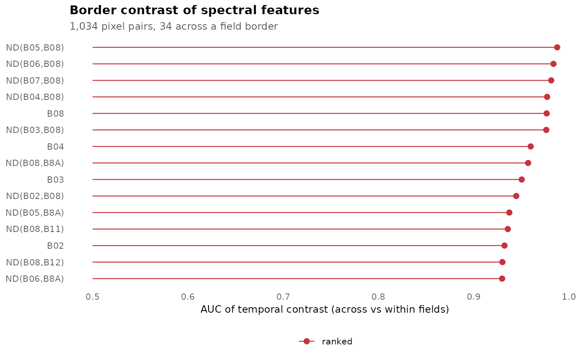

Rank spectral features by their temporal contrast across field borders
Source:R/train.R
fb_rank_contrast.RdFor pixel pairs centred on reference field boundaries (across pairs: the two ends lie
in different fields) and inside fields (within pairs), every candidate feature is
summarised by the temporal maximum and mean, over dates clear at both ends, of
log(|f(p) - f(q)| + 1e-4). Features are ranked by the area under the ROC curve (AUC)
with which the temporal maximum separates across from within pairs, averaged over
strata. This extends the class-separability screening of spectral indices (as in the
svid package) from classes to field borders.
Usage
fb_rank_contrast(
stacks,
references,
features = NULL,
strata = NULL,
n_pairs = 4000L,
seed = 1L
)Arguments
- stacks
An
fb_stackor a list of them (training tiles). For many tiles, list elements may be functions without arguments that return the stack; each tile is then loaded only while it is processed.- references
A reference raster from
fb_reference()or a list of them, one per stack (or functions returning them).- features
Candidate features from
fb_feature_set(); by default the bands and all normalised differences of the first stack's bands.- strata
Optional stratum label per stack; the AUC is averaged over strata.
- n_pairs
Maximum number of across and of within pairs per stack.
- seed
Random seed for pair sampling.
Value
An object of class fb_contrast with ranking (data frame of features with
their AUC, by stratum and averaged) and the pair summaries used by fb_train().
Examples
s <- fb_example_stack("california")
f <- fb_example_files("california")
ref <- fb_reference(sf::st_read(f$fields, quiet = TRUE), s)
rk <- fb_rank_contrast(s, ref, n_pairs = 1000)
head(rk$ranking)
#> feature type auc auc_all
#> 1 ND(B05,B08) nd 0.9876176 0.9876176
#> 2 ND(B06,B08) nd 0.9837059 0.9837059
#> 3 ND(B07,B08) nd 0.9813235 0.9813235
#> 4 ND(B04,B08) nd 0.9770294 0.9770294
#> 5 B08 band 0.9765735 0.9765735
#> 6 ND(B03,B08) nd 0.9761471 0.9761471
fb_plot_ranking(rk, n = 15)
